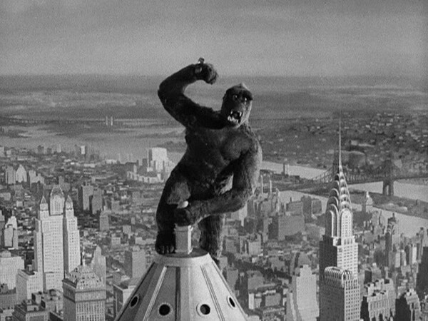

Where and When to Film in NYC

King Kong(1933) was an early, and unforgettable, example of the NYC skyline in film.
When it comes to video scenes set in New York City, there is truly no shortage of choices. Who could forget parapsychology professors Peter Venkman, Ray Stantz, and Egon Spengler hunting ghosts in the New York City Public Library in the opening scene of the 1984 cult classic film Ghostbusters ...right? Or maybe even just a single episode over the 24 year run of the now second longest scripted American primetime television series, NBC’s Law and Order: Special Victims Unit ? Or, you know, any other movie, television show, music video, documentary or corporate advertisement filmed in New York City .
While no one could reasonably argue against NYC as a popular destination for location scouts, this wide collection of source material does beg the question: where in the city do filmmakers want to film-make? Well, as it turns out, the answer is certainly not Staten Island. .
With the question of location settled conclusively, the curious observer might also wonder which season of the year attracts the most production crews? Is it falling leaves in Central Park during autumn? Or maybe the frigid- but eerily beautiful- winters? Or maybe summer… because summer?
As we can see from the graph, it turns out that no one season seems to stand out high above the rest (with regards to the number of permits issued). However, it does seem that a NYC winter deters at least some prospective film crews. Fears over a frozen camera perhaps? It is worth noting here that there existed a number of COVID-19 policies that directly impacted the number of film permits issued; these policies were repealed in July of 2021, explaining the subsequent increase in permits issued across all the seasons. .
The data in these two charts reflects film permits approved by the Mayor's Office of Film, Theatre & Broadcasting (MOME). According to the MOME, film permits are not required for small-scale productions, using hand held cameras or tripods; however, situations in which productions are using “exclusive use of City property, prop weapons, prop vehicles, actors in police uniform or stunts on set” do require a permit. The data supplied was from a period beginning in early January, 2021 and ending in early January, 2022. The repository for this project can be found Here